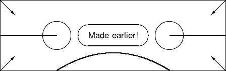

This section looks only at graphics available without the graphics packages, that is, internal to vanilla LATEX. Kopka and Daly [1] explain that “Standard LATEXdoes actually contain the means to make primative drawings on its own” and they consider only the facets of picture that are in standard LATEX, not those that require additional packages. This is what we test as a basic starting point in the vanilla stress test.
